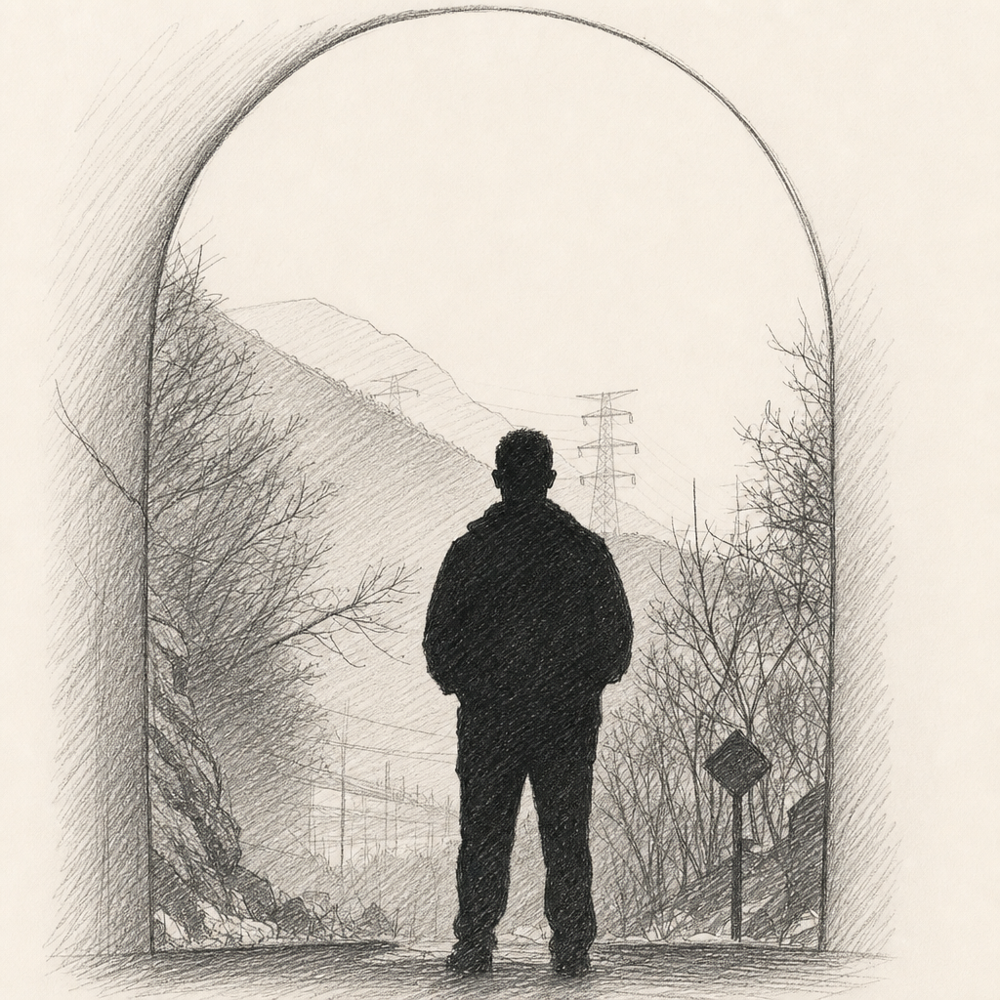

01OPEN SOURCE · MOLECULAR DOCKING
Batch AutoDock Vina on Mac
面向批量分子对接任务的 Mac 工作流，串联配体准备、结构转换、对接运行与结果整理，减少重复操作。
查看 GitHub 项目
01 / BLOG
02 / PROJECTS
将重复的科研操作整理为可复用的工作流。
面向批量分子对接任务的 Mac 工作流，串联配体准备、结构转换、对接运行与结果整理，减少重复操作。
查看 GitHub 项目蛋白–配体分子动力学模拟工作流，覆盖体系准备、模拟执行与常用轨迹分析，帮助整理从输入到结果的操作步骤。
查看 Zenodo 记录03 / PUBLICATIONS
04 / WRITING
我与AI
05 / CONTACT
欢迎来信交流研究、或者只是要一张明信片。